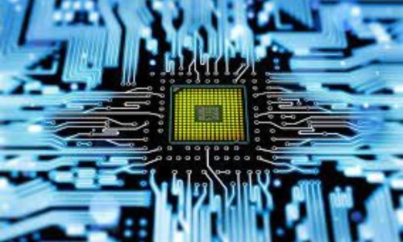

The Department of Electronics and Communication Engineering of TINJRIT has very advanced laboratories equipped with high end instruments from Agilent, Rohde and Schwartz, Tektronix and Texas Instruments. The powerful CAD tools for VLSI, RF Design, Electromagnetic simulation and Circuit simulation provide high tech platforms for experimentation with extreme flexibility. Students and faculty of ECE are continuously engaged in updating the knowledge through projects, experimentation, Industry tie-ups and research publication. The department has best academic results and highly professional Industry trainings are conducted regularly by reputed organizations, Industry experts and faculty members . Graduates are placed in Robert Bosch, Siemens, Huawei, Qualcomm, Cadence, Secure Meters, TCS, Cognizant, eInfochips, 3i-Infotech and other multinationals.